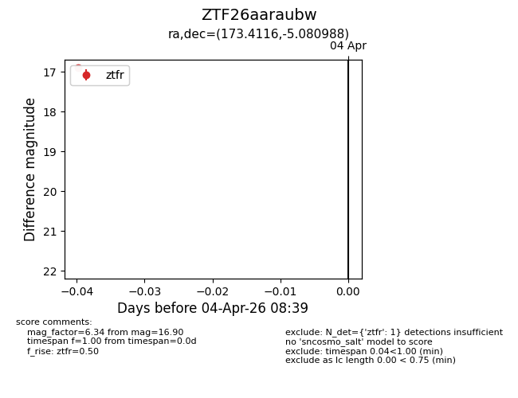
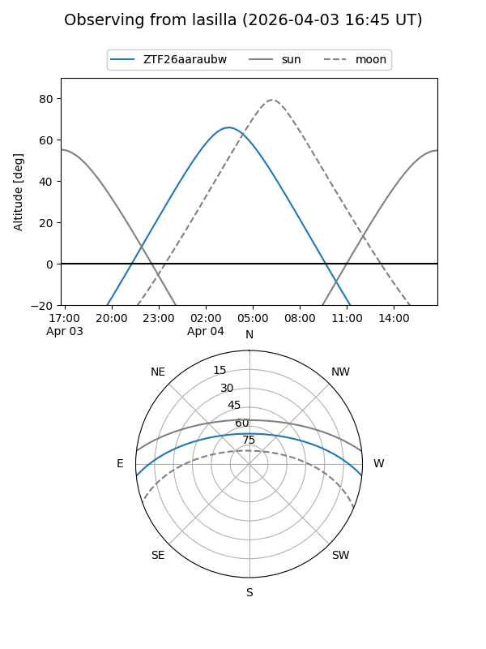
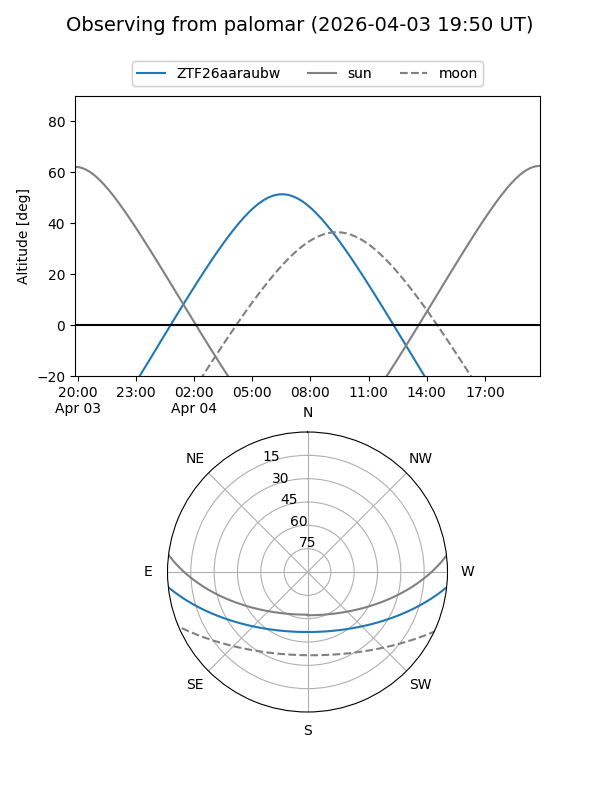

ZTF26aaraubw
Target ZTF26aaraubw at 2026-04-04 08:43
Aliases and brokers:
FINK: link
Lasair: link
ALeRCE: link
alt names
ZTF26aaraubw (ztf,fink_ztf)
Coordinates:
equatorial (ra, dec) = 173.4116,-5.08099
equatorial (HMS+DMS) = 11:33:38.77,-05:04:51.56
galactic (l, b) = (269.7473,+52.70516)
Flags:
Photometry:
last ztfr=16.90
1 ztfr detections
Lightcurve

Visibility


Additional plots